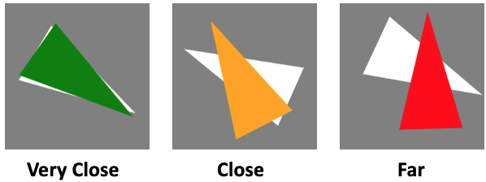

You will have few practice trials where you will receive some feedback on the deviation from your responsed angle to the original angle.
Your repsonse could be in three colors(Green: very close; Orange: close; Red: Far)

Please press the forward arrow key to have some practice trials first.